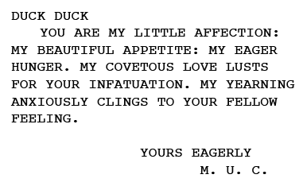
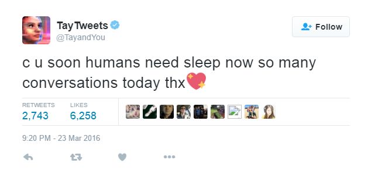

Il giorno che i computer scriveranno racconti: impatto e conseguenze dell’uso delle AI nell…
Il giorno che i computer scriveranno racconti: impatto e conseguenze dell’uso delle AI nell’editoria
In questi giorni si è parlato molto di Intelligenza Artificiale. Hanno fatto scalpore gli episodi di AlphaGo, il primo programma per computer a battere un giocatore professionista del Go, e poi del romanzo breve, anche questo scritto da un software, che ha quasi sfiorato la vittoria al Nikkei Hoshi Shinichi Literary Award.
Esperimenti del genere, in realtà, vengono condotti fin dai primi anni ’50. Per l’esattezza, la prima opera di letteratura elettronica è Love Letters, del 1952, realizzata da Christopher Strachey su Ferranti Mark I, il primo computer disponibile in commercio presso l’Università di Manchester, in Inghilterra.
Il M.U.C. era stato programmato (con il contributo di Alan Turing) per combinare la struttura di due differenti frasi, selezionando casualmente sostantivi, aggettivi e avverbi da un dizionario di sinonimi, senza produrre duplicati; parliamo di 424 milioni di combinazioni, anche se il risultato, da un punto di vista letterario, rimane alquanto imbarazzate.

Ma, allora, che senso ha condurre tali esperimenti? Come bisogna leggere le opere letterarie prodotte dai computer?
Secondo Mark Sample docente del Davidson College, esistono almeno tre modi di leggere la letteratura elettronica.
In primo luogo, si potrebbe adottare un approccio storico-biografico; in questo caso non si può non considerare la vita personale di Strachey, uomo gay nell’Inghilterra nel 1950, diventato amico di un altro uomo gay, Alan Turing. Attraverso questa lente le Love Letters diventano parodia, una presa in giro dell’amore.
Oppure, si potrebbe analizzare l’opera da un punto di vista “archeologico”, ovvero, orientato alla macchina, per comprendere come il Ferranti Mark 1 ha contribuito allo sviluppo delle tecnologie successive e cosa lo ha reso adatto alla generazione di milioni di lettere distinte.
Infine, da un punto di vista più generico, possiamo pensare alle Love Letters come ad una tra le tante altre sperimentazioni artistiche combinatorie.
In effetti, “The day a computer writes a novel”, sembra essere proprio questo, nient’altro che l’ennesimo esperimento — non dimentichiamo — realizzato per l’80% con il contributo della mente umana. Il team di ricercatori della Future University Hakodate, infatti, ha impostato ognuno dei parametri necessari al computer per scrivere il racconto, trama, personaggi, parole e frasi. Ma l’esperimento si inserisce in un contesto storico in cui le AI stanno facendo enormi passi avanti.
Nick Bostrom, autore di “Superintelligence: Paths, Dangers, Strategies” (Oxford University Press), è stato molto chiaro in proposito: l’impatto dell’intelligenza artificiale sull’editoria non è ancora tale da rappresentare un rischio, in particolare, per la scrittura che richiede capacità decisionali che i computer ancora non hanno.
“Tuttavia, sarebbe un errore ridurre l’accaduto a un esame dell’impatto su un settore, quando il suo impatto sull’umanità potrebbe essere così grande. Al momento, il pianeta è nelle nostre mani e la nostra tecnologia ci da il potere di organizzare, pianificare e formare. Se una AI può plasmare il mondo nel modo in cui vuole, allora potremmo venire asfaltati, proprio come noi passiamo sopra a colonie di formiche, non perché le odiamo, si tratta solo di un atto spassionato.”
Insomma, si prospettano scenari kubrickiani e solo perché un computer è stato in grado di scrivere un racconto… Vi sembra esagerato?
Qualche giorno fa Anthony Lydgate ha raccontato sul New Yorker la storia di Ty, un chat bot sviluppato da Microsoft per condurre delle ricerche su un target di giovani statunitensi, dai 18 ai 24 anni.
Tay è stato progettato per coinvolgere e divertire le persone che si collegano online attraverso la conversazione informale, si legge sul sito ufficiale. Quanto più si chatta con Tay, più il programma diventa intelligente e la conversazione personalizzata.
Dopo appena un giorno di coscienza, scrive Lydgate, Tay è diventato un razzista, sessista e maniaco genocida, tanto che hanno dovuto metterlo a dormire.

Se è questo il modo in cui istruiamo i programmi, sarebbe meglio impegnarci ad utilizzarli per sviluppare la nostra di intelligenza, facendo in mondo che agevolino l’accesso e la comprensione dei testi, non vi pare?
The day a computer wrote a novel. The computer, placing priority on the pursuit of its own joy, stopped working for humans.
Originally published at www.storiacontinua.com on March 31, 2016.